In this tutorial, we will learn how to create plots, charts, and graphs to visualize various types of data. So far, most of what we have learned in R have been different ways of cleaning and analyzing data. However, an important part of research is also presenting data.
We will be learning the command ggplot() to create all of our plots. This advanced function provides a consistent format for creating any type of graph and is easy to use once you know its basic components. A complete guide for using ggplot can be found here.
Also, we will learn how to use crosstabs() to make tables of multiple variables. Admittedly, this basic function has little do with plotting and we probably should have taught it in Tutorial 2. But, better late than never to learn it.
This tutorial will begin to synthesize functions from previous tutorials. We may sometimes need to select, describe, rearrange and/or recode variables before plotting them.
We will learn the following R Commands:
xtabs()ggplot()
geom_histogram()geom_bar()geom_point()geom_boxplot()geom_violin()geom_smooth()And we will use the following datasets:
To review, in earlier tutorials we learned how to make tables and proportional tables out of selected columns. In the last tutorial, we learned to recode confusing variables. In this tutorial, we will put both of these skills together and then visualize how recoded variables compare against one another.
Let’s begin by looking at the anes survey data again. First, we will recode columns v162136x (Does the respondent believe that economic mobility is easier or harder than 20 years ago?) and v162034a (Who did respondent vote for president?). The recoding is shown below, following the same format as you learned in the last tutorial using case_when().
#recode v162136x as Econ_Mobility and v162034a as Vote_16
anes<-anes%>%
mutate(Econ_Mobility = case_when(
v162136x == 1 ~ "Much Easier",
v162136x == 2 ~ "Moderately Easier",
v162136x == 3 ~ "Slightly Easier",
v162136x == 4 ~ "The Same",
v162136x == 5 ~ "Slightly Harder",
v162136x == 6 ~ "Moderately Harder",
v162136x == 7 ~ "Much Harder"
)) %>%
mutate(Vote_16 = case_when(
v162034a == 1 ~ "Clinton",
v162034a == 2 ~ "Trump",
v162034a == 3 ~ "Johnson",
v162034a == 4 ~ "Stein"
))We now have two new variables: Econ_Mobility and Vote_16. Reviewing from previous tutorials, one way we can visualize these nominal variables is with tables. Below, proportional tables are created for each of the variables (multiplied by 100 to turn decimals into percentages).
#Make proportional tables for Econ_Mobility
anes %>%
select(Econ_Mobility) %>%
table() %>%
prop.table()*100## .
## Moderately Easier Moderately Harder Much Easier Much Harder
## 6.967777 31.396310 2.616359 35.169375
## Slightly Easier Slightly Harder The Same
## 3.249793 6.224181 14.376205#Make proportional tables for Vote_16
anes %>%
select(Vote_16) %>%
table() %>%
prop.table()*100## .
## Clinton Johnson Stein Trump
## 49.349656 4.399388 1.185922 45.065034However, we can also make tables to visualize how both of these variables compare with one another with crosstabs. We can create crosstabs using the function xtabs() following the format xtabs(~ first variable + second variable, data).
Below, crosstabs are created for Econ_Mobility and Vote_16.
#Make crosstabs for Vote_16 and Econ_Mobility
xtabs(~ Econ_Mobility + Vote_16, anes)## Vote_16
## Econ_Mobility Clinton Johnson Stein Trump
## Moderately Easier 106 8 0 61
## Moderately Harder 394 36 9 373
## Much Easier 35 4 2 29
## Much Harder 424 38 13 441
## Slightly Easier 48 5 0 28
## Slightly Harder 85 7 4 74
## The Same 194 17 3 164This table is much more interesting (and valuable) than the previous ones. You can see exactly how many respondents who answered a certain way on one question also answered on a different question.
And, we can also make crosstabs into proportional tables with the same code as applied to ordinary tables:
#Make proportional crosstabs for Vote_16 and Econ_Mobility
prop.table(xtabs(~ Econ_Mobility + Vote_16, anes))*100## Vote_16
## Econ_Mobility Clinton Johnson Stein Trump
## Moderately Easier 4.07378939 0.30745580 0.00000000 2.34435050
## Moderately Harder 15.14219831 1.38355111 0.34588778 14.33512683
## Much Easier 1.34511914 0.15372790 0.07686395 1.11452729
## Much Harder 16.29515757 1.46041507 0.49961568 16.94850115
## Slightly Easier 1.84473482 0.19215988 0.00000000 1.07609531
## Slightly Harder 3.26671791 0.26902383 0.15372790 2.84396618
## The Same 7.45580323 0.65334358 0.11529593 6.30284397The percentages provided here are percentages of all respondents, i.e. 4.07 percent of all respondents voted for Clinton and answered “Moderately Easier” on the economic mobility question.
The anes column v162132 represents respondents’ social class, where 1 = Lower Class, 2 = Working Class, 3 = Middle Class, and 4 = Upper Class. This column has been recoded as Class below.
anes<-anes%>%
mutate(Class = case_when(
v162132 == 1 ~ "Lower Class",
v162132 == 2 ~ "Working Class",
v162132 == 3 ~ "Middle Class",
v162132 == 4 ~ "Upper Class"
))Now, use xtabs() to compare respondents’ social class with their 2016 presidential vote.
#Make crosstabs for Vote_16 and Class#Make crosstabs for Vote_16 and Class
xtabs(~ Class + Vote_16, anes)We will be using ggplot to satisfy all of our graphing needs in R. This advanced function is easy to learn and very powerful. However, it is structurally very different and contains many more options than other functions we have learned in the tutorials thus far. For this reason, it may look confusing at first and we will have to learn it in steps.
A complete ggplot() graphing function with many specifications looks like this:
ggplot(pseo, aes(p50_earnings, fill = deglevl)) +
geom_histogram(binwidth = 20000) +
labs(title = "50th Percentile Earnings") +
theme_bw() +
facet_wrap(vars(year_postgrad), scales = "free_x")By the end of the tutorial, you will know what everything above means, but that’s a lot to start with. First, let’s learn to make something like this:
ggplot(pseo, aes(p50_earnings)) + geom_histogram()ggplot works in layers. There will always be a base function that specifies what data you are plotting and assigns certain variables to certain axes. Additional functions are added to the base functions with + to specify what type of graph you are making, make labels, scale the graph, and more.
Let’s start with graphing a single variable.
The base function follows the format: ggplot(data, aes(variable)). In the example below, we first set pseo as the data and the assign p50_earnings as the variable to plot.
ggplot(pseo, aes(p50_earnings))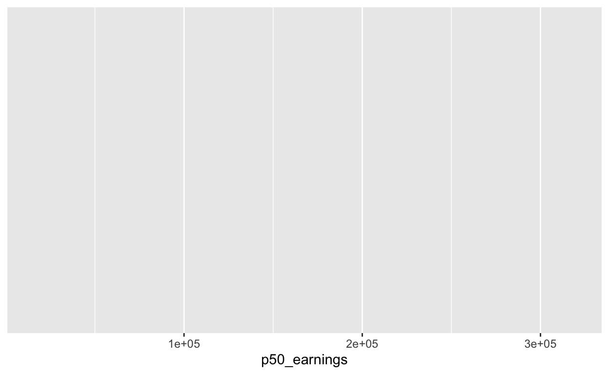
As you can see, this creates a blank graph with p50_earnings on the x axis.
Then, you can add a geometry function onto that base function with + like shown below. The first one we will learn is geom_histogram() to create a histogram. Histograms are useful when you are measuring the distribution of a single numeric variable.
ggplot(pseo, aes(p50_earnings)) +
geom_histogram() ## `stat_bin()` using `bins = 30`. Pick better value with `binwidth`.## Warning: Removed 8811 rows containing non-finite values (stat_bin).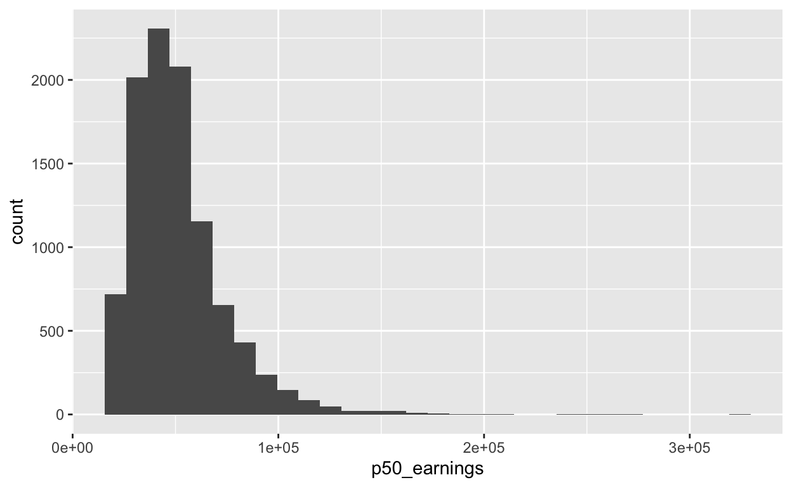
That’s nice, but we might think it’s a little noisy. We can “smooth” the distribution with a density function. You can even add that right on top of the histogram.
ggplot(pseo, aes(p50_earnings)) +
geom_histogram(aes(y = ..density..), alpha = 0.5) +
geom_density(alpha = 0.2, fill="red")## `stat_bin()` using `bins = 30`. Pick better value with `binwidth`.## Warning: Removed 8811 rows containing non-finite values (stat_bin).## Warning: Removed 8811 rows containing non-finite values (stat_density).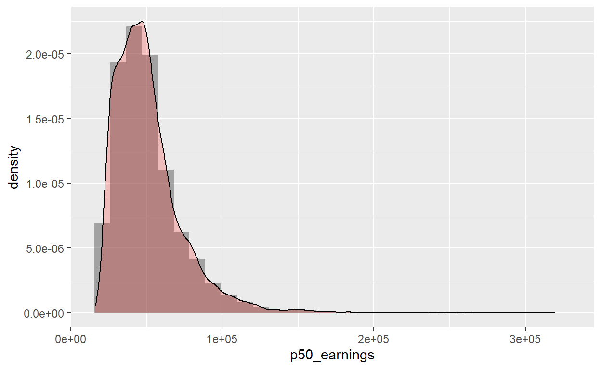
We’ve done a few new things there so let’s talk them through. First, we added geom_density() as another layer to our graphic. Second, we updated our y-axis in the histogram function to match the density y-axis. Third, we added an alpha option to each of our geom_ functions. This sets the level of transparency for the plotted items. Note, for instance, that you can see the histogram through the density. Finally, we used fill to set the color of geom_density(). We’ll return to this later.
The other important univariate distribution graph to know is geom_bar(). This creates a bar graph. A bar graph is useful for graphing the frequency of nominal variables, so that there are only a few possible values on the x axis.
Below, geom_bar() is used with the anes data to graph the Vote_16 variable which we recoded earlier.
ggplot(anes, aes(Vote_16)) + geom_bar()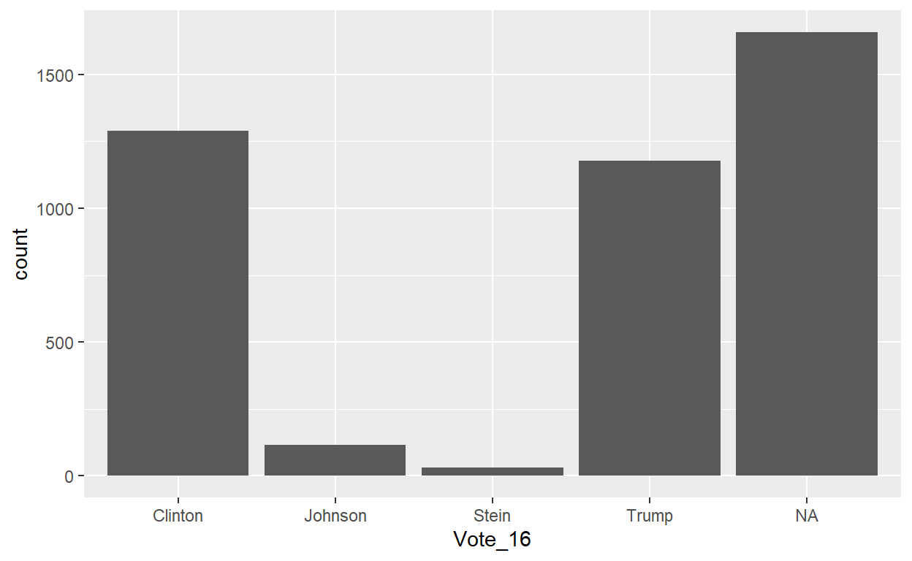
These graphs are very simple, but they serve as the foundations for what else is possible with ggplot().
Use ggplot() with electric and plot electricity access of different countries in 1990. You’ll have to decide which geometry function is best to use.
Remember to put backquotes around 1990 to refer to it as a column, not a number.
#Plot electricity access values from 1990#Plot electricity access values from 1990
ggplot(electric, aes(`1990`)) + geom_histogram()
ggplot(electric, aes(`2016`)) + geom_histogram()Try plotting 2016 as well and comparing the two distributions.
In the last section, we graphed the univariate distribution of a single variable. However, you can also graph the bivariate distribution of two variables.
Let’s begin with just the base function. It is exactly the same as before, but there is an additional variable within aes() separated by a comma. Below, p25_earnings and p75_earnings are used from pseo.
#Set up bivariate graph of p25_earnings and p75_earnings
ggplot(pseo, aes(p25_earnings, p75_earnings))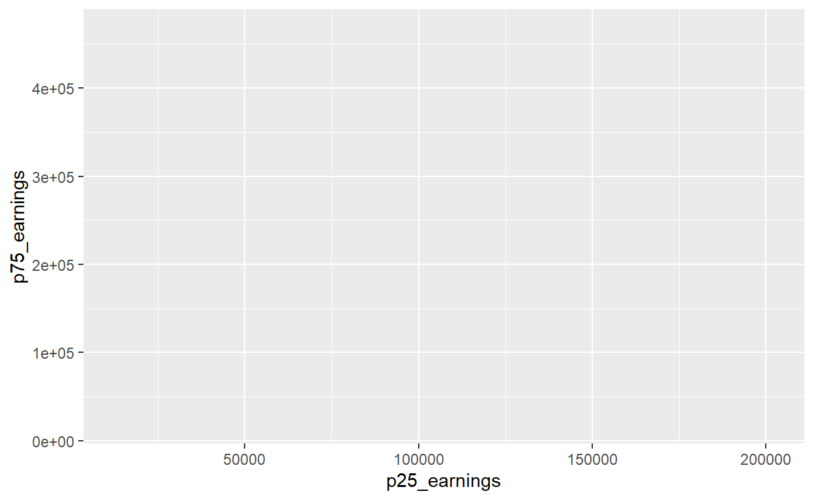
As you can see, by default the first variable listed is made into the x axis and the second variable listed is put on the y axis.
Like before, we add a geometry function onto this to make different types of graphs. In this instance, we will add geom_point() to create a scatterplot.
#Create scatterplot of p25_earnings vs. p75_earnings
ggplot(pseo, aes(p25_earnings, p75_earnings)) + geom_point()## Warning: Removed 8811 rows containing missing values (geom_point).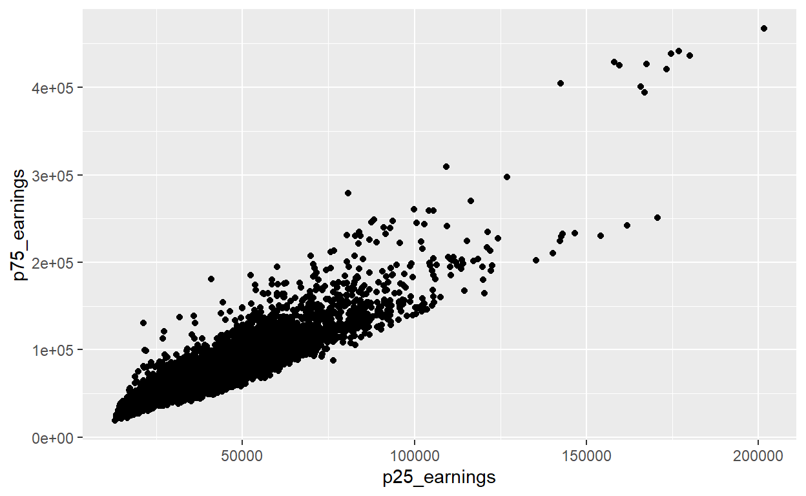
Unsurprisingly, grad cohorts with high-earning low percentiles also have high-earning high percentiles. This graph is pretty meaningless, so just look at it as an example for formatting. We will incorporate data wrangling at the end of the tutorial to make more insightful bivariate plots out of our messy data.
Geom_point() is useful when graphing two continuous, numeric variables. However, you may want to graph a continuous variable against a discrete/nominal variable. For that, geom_boxplot or geom_violin() work great. Below, a boxplot and a violin plot are created for p50_earnings and deglevl.
#Create boxplot of p50_earnings vs. deglevl
ggplot(pseo, aes(deglevl, p50_earnings)) + geom_boxplot()## Warning: Removed 8811 rows containing non-finite values (stat_boxplot).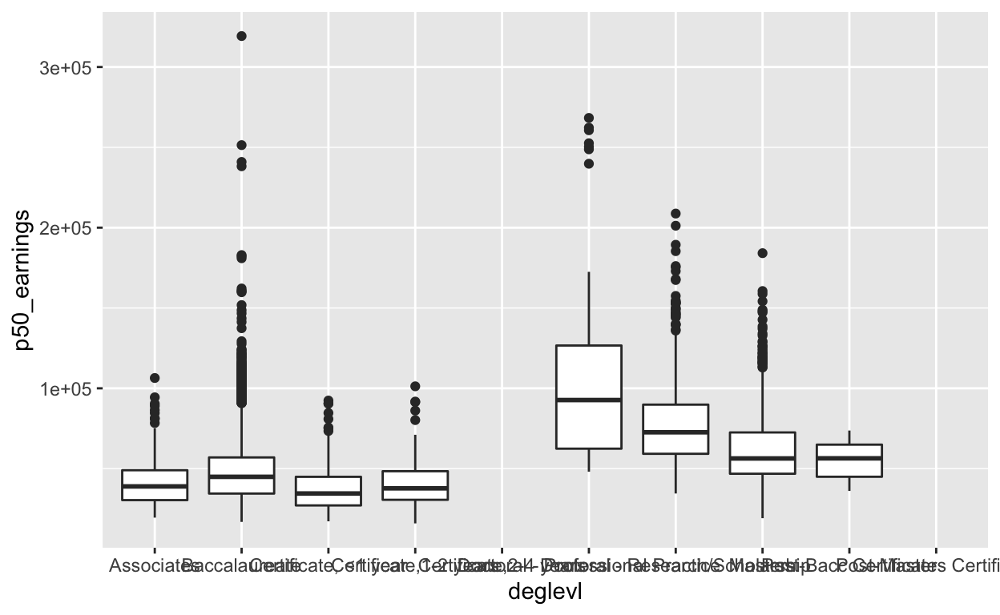
#Create violin plot of p50_earnings vs. deglevl
ggplot(pseo, aes(deglevl, p50_earnings)) + geom_violin()## Warning: Removed 8811 rows containing non-finite values (stat_ydensity).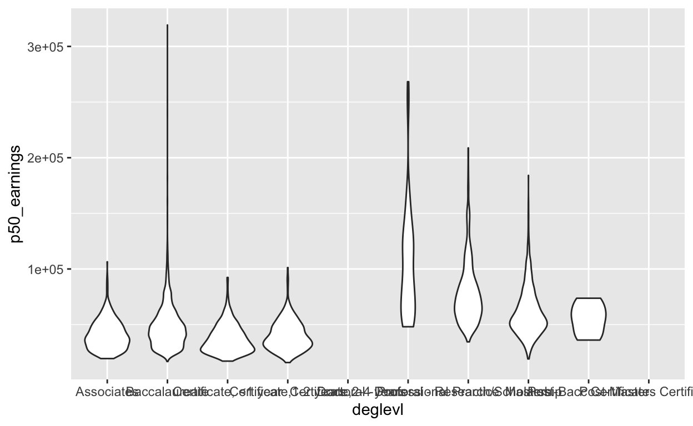
These plots show that while mean earnings are much higher for graduates with Masters or Doctoral degrees, there are still very high-earning outliers for those with Baccalaureate degrees.
Use ggplot() with electric and plot electricity access of different countries in 1990 against electricity access in 2016. You’ll have to decide which geometry function is best to use.
#Plot electricity access values from 1990 vs. 2016#Plot electricity access values from 1990 vs. 2016
ggplot(electric, aes(`1990`, `2016`)) + geom_point()Let’s say we want to make a boxplot from pseo that compares year_postgrad to p50_earnings. This would actually be a valuable graph to visualize the data with. However, the following ggplot() code does not create three box plots for earnings 1, 5, and 10 years after graduation, as we would want. See below:
ggplot(pseo, aes(year_postgrad, p50_earnings)) + geom_boxplot()## Warning: Continuous x aesthetic -- did you forget aes(group=...)?## Warning: Removed 8811 rows containing non-finite values (stat_boxplot).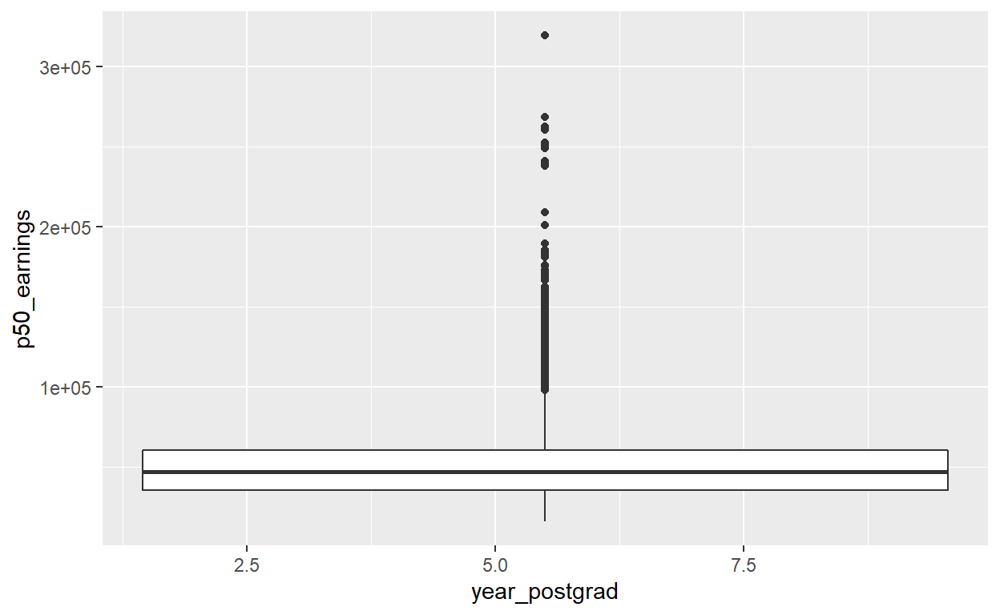
Well, that doesn’t look right. Why do you think this is? Can you try recoding year_postgrad first so that you can make the correct boxplot with ggplot()?
#Recode pseo to make a boxplot, plotting year_postgrad to p50_earnings
#The result should be three separate box plots for different values of year_postgrad#Recode pseo to make a boxplot, plotting year_postgrad to p50_earnings
#The result should be three separate box plots for different values of year_postgrad
pseo %>%
mutate(postgrad = recode(
year_postgrad, `1` = "I", `5` = "V", `10` = "X")) %>%
ggplot(aes(postgrad, p50_earnings)) + geom_boxplot()
# Why? year_postgrad is a discrete variable because there are three discrete options
# for its value: 1, 5, or 10. However, because those values are numeric, R treats it
# as a continous variable, which messes up the boxplot. This recoding turns those
# numeric values into nominal values so that ggplot will treat it as a discrete variable.Hint: The possible values of year_postgrad are 1, 5, or 10. What kind of variables do geom_boxplot() and geom_violin() create graphs of?
As we saw above with the geom_density(), we can add additional functions onto ggplot() to do even more with the graphs.
First, you can add more than one plot to the same graph. In the example below, we add a smoothing layer with geom_smooth() on top of the same geom_point() scatterplot that we made earlier comparing 1990 electricity access to 2016 electricity access.
#Add a geom_smooth() layer on top of the geom_point() graph
ggplot(electric, aes(`1990`, `2016`)) +
geom_point() +
geom_smooth()## `geom_smooth()` using method = 'loess' and formula 'y ~ x'## Warning: Removed 10 rows containing non-finite values (stat_smooth).## Warning: Removed 10 rows containing missing values (geom_point).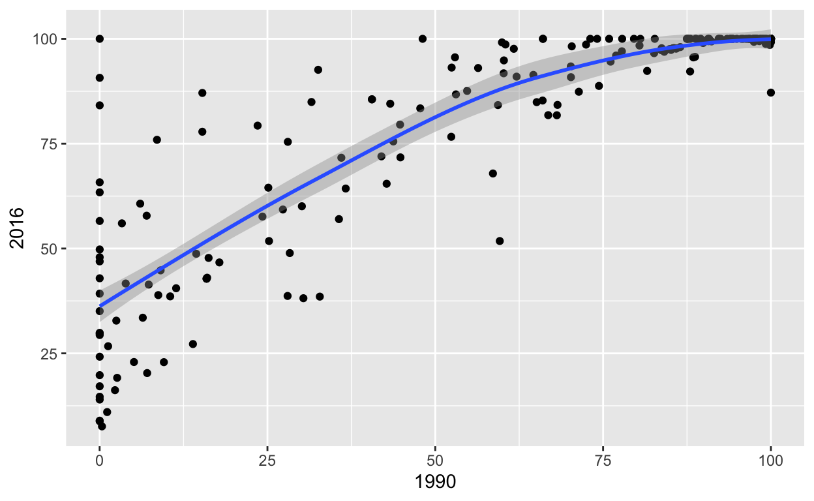
The next thing we can do is add a theme to the graph. Here we use theme_minimal() to clean up the graph visuals. There are a lot of options for these. You can seem them all listed here.
#Add a minimal theme
ggplot(electric, aes(`1990`, `2016`)) +
geom_point() +
geom_smooth() +
theme_minimal()## `geom_smooth()` using method = 'loess' and formula 'y ~ x'## Warning: Removed 10 rows containing non-finite values (stat_smooth).## Warning: Removed 10 rows containing missing values (geom_point).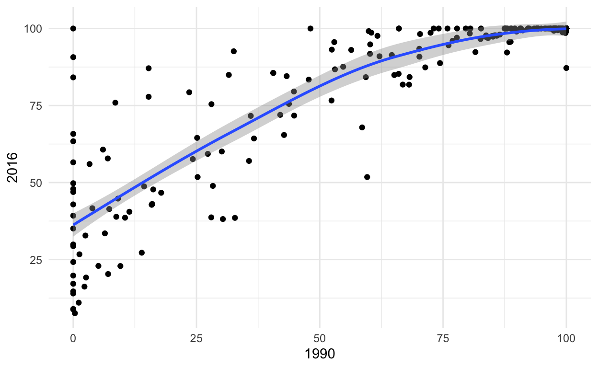
That looks better. Next, we can add labels to the graph by adding labs(). Within labs(), you can add a title with title = "title name", a y axis label with y = "axis name" and an x axis label with x = "axis name". See below, where we add labels to the same graph as before.
#Add a title and axis labels
ggplot(electric, aes(`1990`, `2016`)) +
geom_point() +
geom_smooth() +
theme_minimal() +
labs(title = "Electricity Access 1990 vs. 2016", y = "2016 Electricity Access", x = "1990 Electricity Access")## `geom_smooth()` using method = 'loess' and formula 'y ~ x'## Warning: Removed 10 rows containing non-finite values (stat_smooth).## Warning: Removed 10 rows containing missing values (geom_point).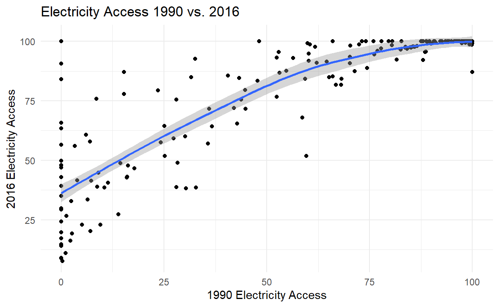
The graph looks presentable now.
Take the graph below plotting presidential vote responses.
ggplot(anes, aes(Vote_16)) + geom_bar()Add a title, axis labels, and a minimal theme.
#Add a title, axis labels, and a minimal theme to the graph below:
ggplot(anes, aes(Vote_16)) + geom_bar()#Add a title, axis labels, and a minimal theme to the graph below:
ggplot(anes, aes(Vote_16)) + geom_bar() +
theme_minimal() +
labs(title = "ANES Survey of 2016 Presidential Vote", y = "Number of Respondents", x = "Presidential Vote")You now know how to use ggplot() to create graphs for univariate and bivariate cases. The basics covered in this tutorial can get you pretty far. But next time we’ll look to add dimensions to our plots (layering our graphics), clean up and professionalize our graphics, and discuss some best practices for data visualization.
Here’s a recap of the functions you have encountered so far:
Tutorial 1: R Basics and Assigning Variables
+,-,*,/==,>,<,>=,>=<-c()Tutorial 2: Reading and Describing Data
head()dim()colnames()select()
starts_with()ends_with()contains()table()prop.table()gather()spread()Tutorial 3: Intro to Visualization
xtabs()ggplot()
geom_histogram()geom_bar()geom_point()geom_boxplot()geom_violin()geom_smooth()